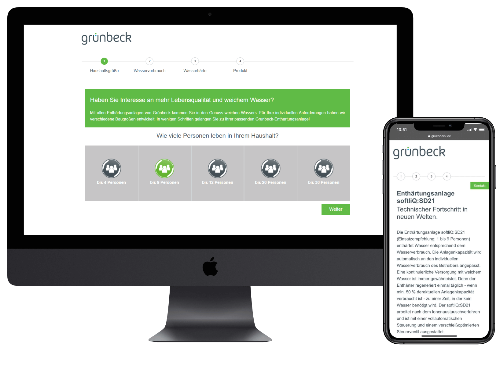
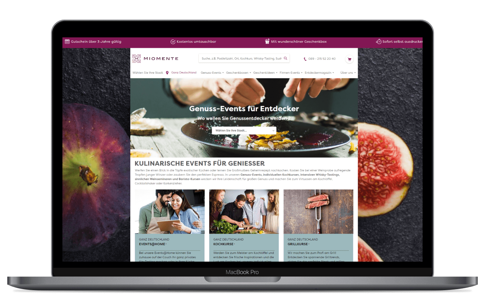

Case
Studies

Grünbeck water treatment GmbH
WEB DESIGN, USER EXPERIENCE, WEB DEVELOPMENT
- HTML / CSS
- JS
Development of various features for the Grünbeck website. Among other things, a funnel to help you
find
the right product and an interactive map of Germany to provide an overview of the Grünbeck branches.
Read More

Miomente GmbH
CRO CONSULTING, WEB DESIGN / PROGRAMMING,
TRACKING
- Magento
- HTML / CSS
- JS
- Google Analytics
- Google Tag Manager
Concept and implementation of full-fledged eCommerce tracking with Google Analytics and Google Tag
Manager. Advice on conversion optimization and programming of the new product page.
Read More